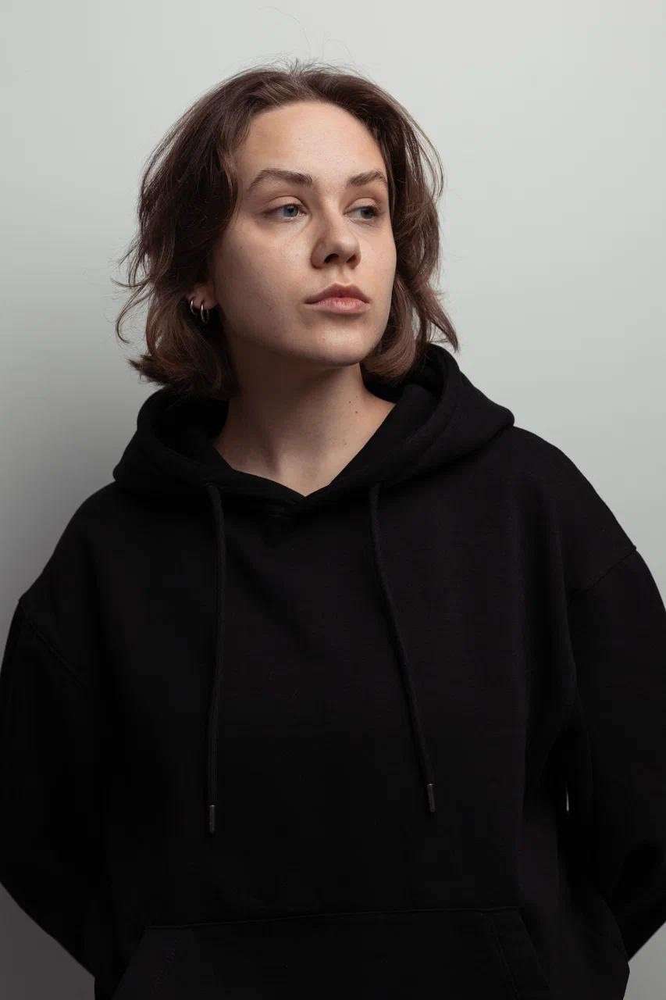

(CV)
Ксения Некипелова
Режиссер кино

Избранные режиссерские работы
AURA — игровой короткий метр, 2026
Режиссер-постановщик
Финалист Международного кинофестиваля «Святая Анна»
«Послушайте!» / Listen! — документальный короткий метр, 2026
Режиссер / сценарист
LUCK — игровой короткий метр, 2026
Режиссер-постановщик
Опыт работы
«Жусуп» — историко-драматический полнометражный фильм
«Кыргызфильм» / режиссерский департамент
Игровой полнометражный фильм — российская сказка (NDA)
Ассистент / бригадир АМС
Разработка проектов
- Поиск и анализ референсов
- Подготовка материалов и презентаций для питчинга
- Разработка заявок на гранты
- Фестивальная стратегия и подбор фестивалей
Избранные художественные проекты
«Сизиф» — партиципаторный перформанс и инсталляция, 2021
Концепция / художник
Интерактивная инсталляция об экологической ответственности, построенная вокруг коллективного физического действия.
Опыт в сфере искусства и культуры
Музей современного искусства «Гараж» — Москва, 2019–2020
Триеннале российского современного искусства
Работа в команде крупного выставочного проекта, взаимодействие с художниками, кураторами и зрителями.
Международный фестиваль искусства ARTLIFE — Москва, 2020
Координация фестиваля
Координация команд и мероприятий для посетителей международного фестиваля, объединившего 155 художников из 38 стран.
Образование
- Московская школа нового кино — режиссура, 2025–2027
- НИУ ВШЭ — факультет социальных наук, 2018–2022
- Дополнительная специализация: интегрированные коммуникации и современное искусство
- Университет Палермо — история искусства, 2021
- Музей современного искусства (MoMA) — «Современное искусство и идеи», 2020
Языки
Русский — родной
Английский — выше среднего
Испанский — средний
Немецкий — базовый